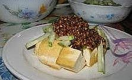

Sambal Petis

Bahan:
- 6-10 cabai rawit atau sesuai selera
- 2 sdm kacang tanah goreng
- 200 gram petis udang
- ½ sdt terasi bakar
- 1 buah pisang batu, diparut kasar
- 1 sdt asam
- 50cc air matang
Cara membuat:
- Haluskan cabai, terasi, kacang tanah goreng, dan petis sampai
tercampur rata.
- Masukkan parutan pisang batu, asam dan air matang. Haluskan lagi.
- Sambal petis biasa dihidangkan dengan rujak cingur atau buahbuahan. Selalu campur sambal petis dengan rujak sayur atau buahbuahan pada saat dihidangkan/disantap supaya tidak berair.